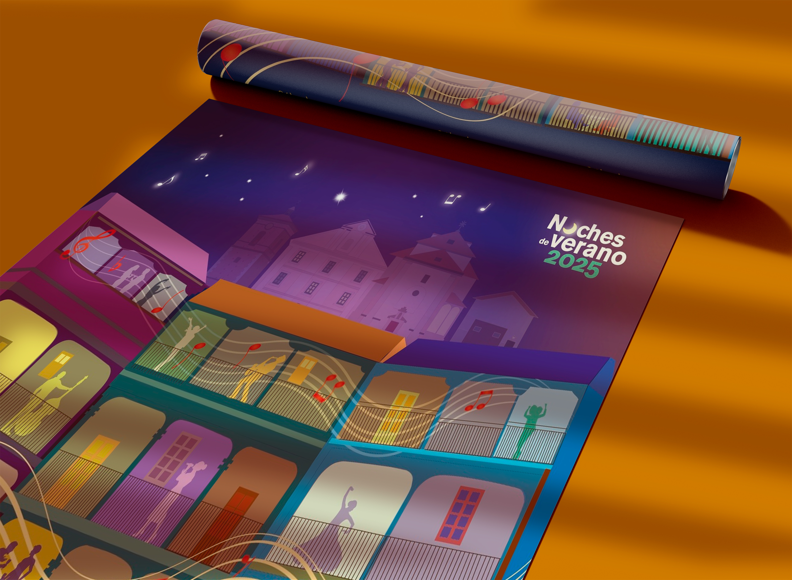
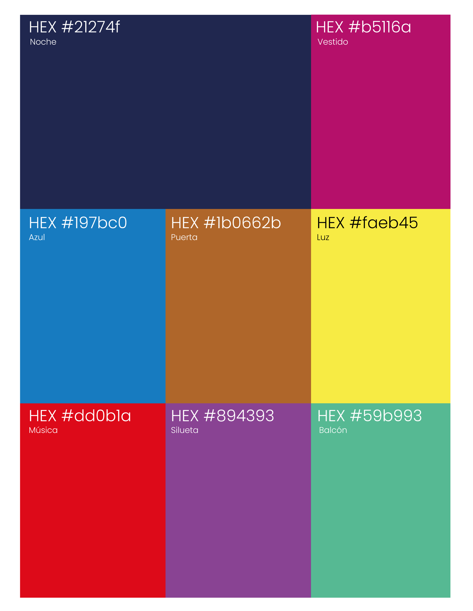
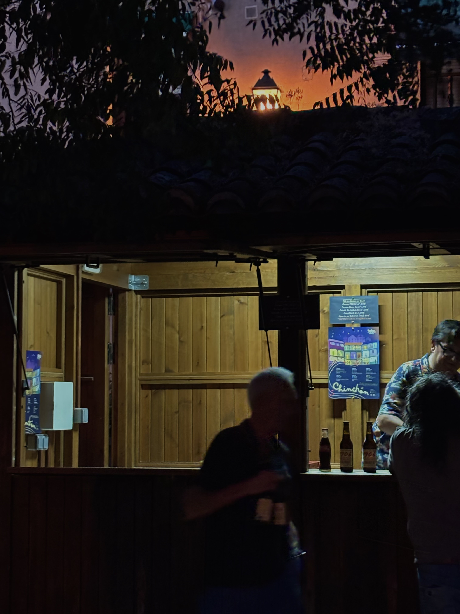
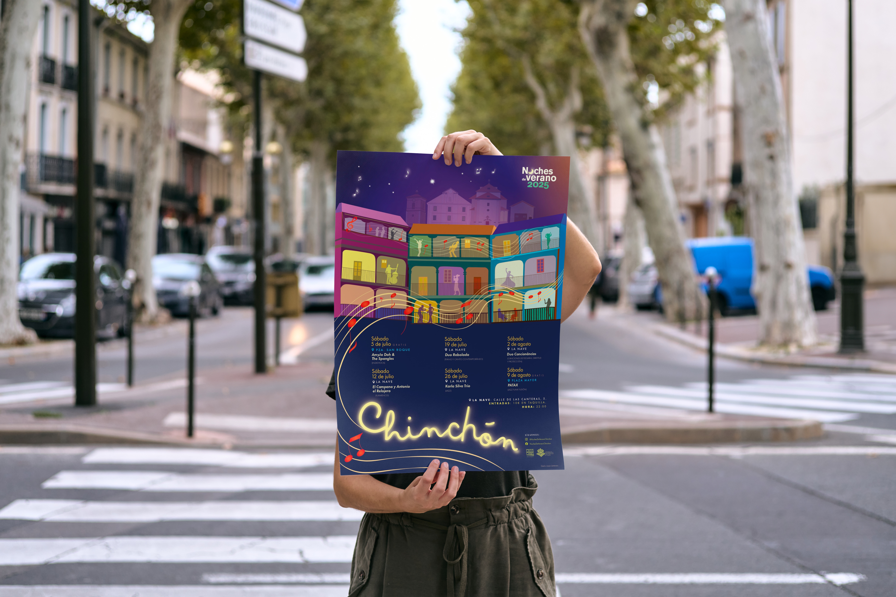
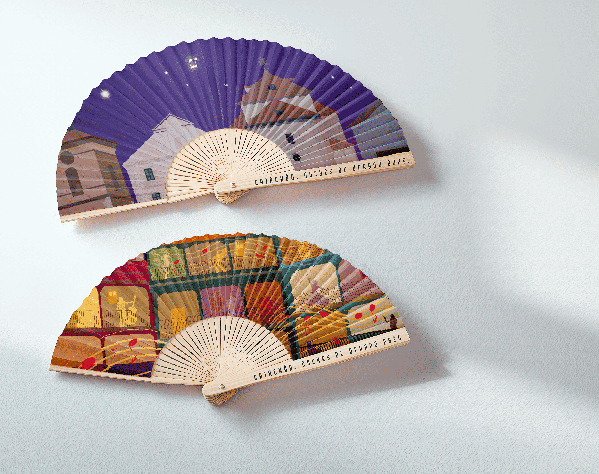
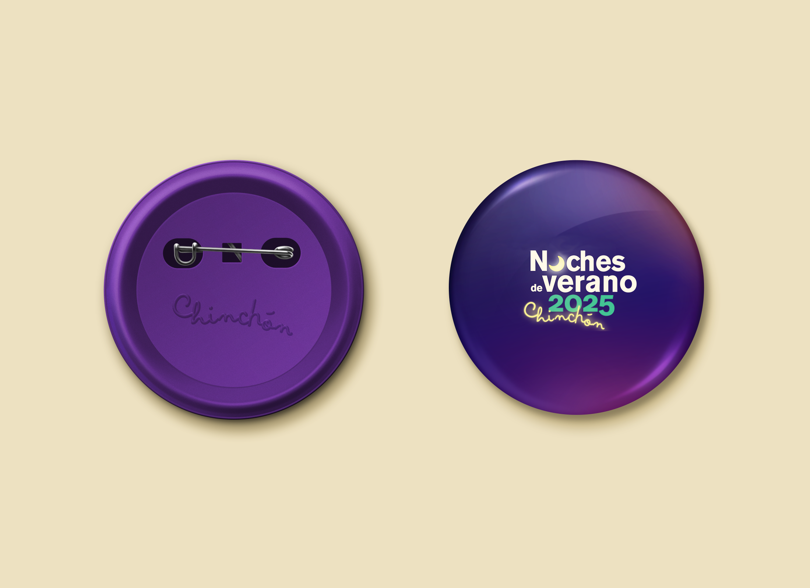

¿Cómo capturar la esencia de una noche de verano castellana en un sistema visual reconocible y coleccionable?
Visual Identity
Noches de Verano is an annual cultural festival held in Chinchón, a small town near Madrid known for its porticoed main square and traditional balconied architecture. The project involved designing the official poster for the 2025 edition — a piece meant to work both as the festival's visual identity and as a standalone graphic object. The proposal was selected among those submitted by the group as part of a university project.
The design is built on two overlapping narrative layers: in the background, Chinchón's nocturnal skyline rendered in deep blues, mauves, and lilacs, placing the viewer in that precise moment between dusk and night. In the foreground, a colourful vector illustration of the town's characteristic balconies, each one inhabited by silhouettes dancing, playing, or singing — turning everyday architecture into a living stage for the festival.





